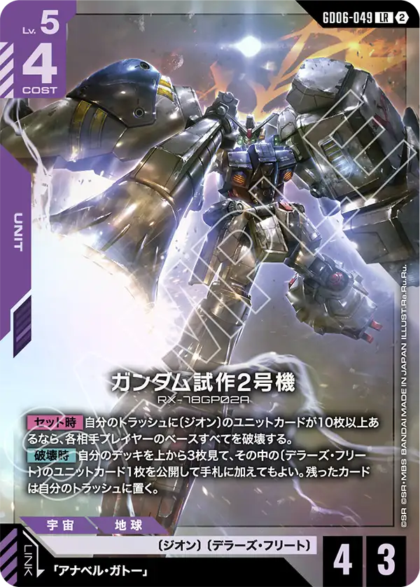
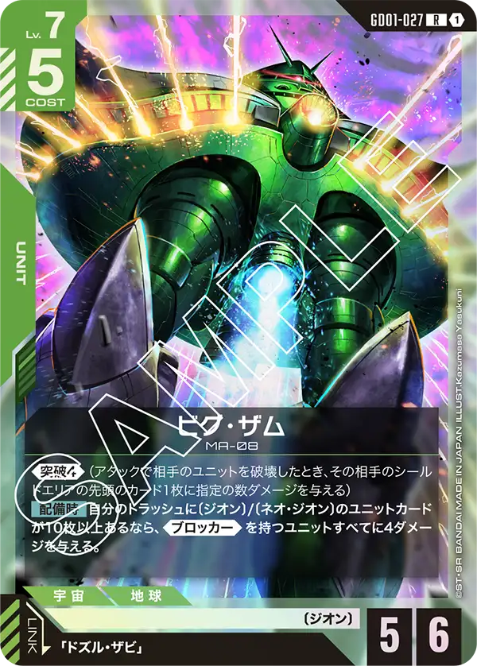
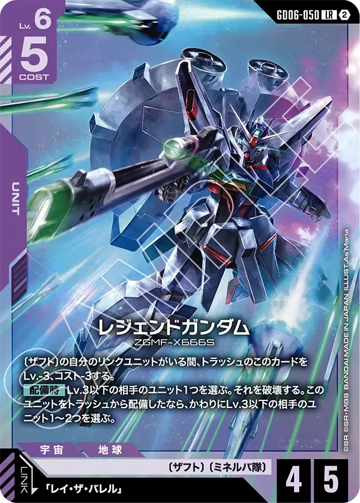
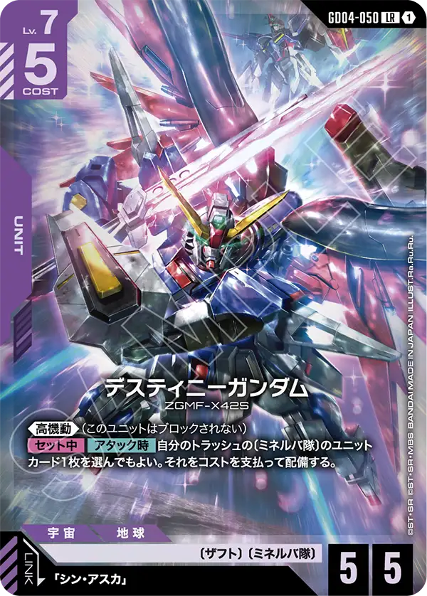
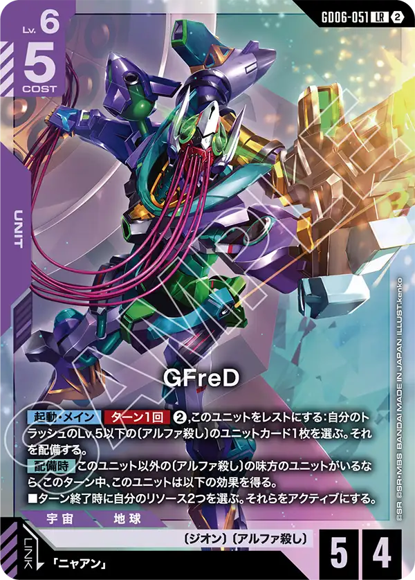

紫LRの顔ぶれ
GD06の紫LRは3枚。〔デラーズ・フリート〕のガンダム試作2号機、〔ザフト〕のレジェンドガンダム、〔アルファ殺し〕のGFreD。3枚ともトラッシュを見る効果を持ち、紫らしく「捨ててから使う」作りになっている。
紫の新しい特徴は〔デラーズ・フリート〕（11枚・全部GD06）と、青にもまたがる〔アルファ殺し〕。〔ザフト〕は57種ある既存の大きな特徴で（パラレル版を除く）、GD06にはレジェンドガンダムとブラストインパルスガンダム（GD06-058）の2枚だけが入った。

ガンダム試作2号機 GD06-049
【セット時】自分のトラッシュに〔ジオン〕のユニットカードが10枚以上あるなら、各相手プレイヤーのベースすべてを破壊する。 【破壊時】自分のデッキを上から3枚見て、その中の〔デラーズ・フリート〕のユニットカード1枚を公開して手札に加えてもよい。残ったカードは自分のトラッシュに置く。
【セット時】の全ベース破壊はトラッシュの〔ジオン〕ユニットカード10枚が条件。【破壊時】にデッキの上3枚を見て残りをトラッシュへ送るので、破壊されるたびにトラッシュが3枚増え（自身は〔ジオン〕）、2枚目以降の条件が近づく。
アナベル・ガトー（GD06-093・Lv.4コスト1）は【アタック時】に、そのバトルで自分のLv.以下の相手ユニットから受けるバトルダメージを2軽減する。〔デラーズ・フリート〕11枚はどれも〔ジオン〕を併せ持つ。内訳は自身を含むユニット7種（Lv.4コスト2の試作2号機 GD06-055、ザメル、リック・ドムⅡ（カリウス機）、ドム・トローペン、ザクⅡF2型、ドラッツェ）、パイロットのガトー、コマンド2枚（ジオンの残光・古参の合流）、ベースのグワデン。
各相手プレイヤーのベースをすべて破壊する非常に大味な効果を持つカード。
ただし、セット時にジオンのユニットが10枚以上必要と言うことで通常の対戦ではなかなか効果は発揮できないと思われる。
ベースを問答無用で破壊できるので今後非常に強力なベースが登場したときは採用の可能性はあるかもしれない。
破壊時の効果はデッキから3枚見て1枚回収、残りをトラッシュに送る効果を持つため、このカードを複数出して効果を使いながらセット時効果を使ってほしい意図は感じる。
ビグ・ザム[GD01-027]より効果の発動条件が厳しいのは何か意図はあるのだろうか。


レジェンドガンダム GD06-050
〔ザフト〕の自分のリンクユニットがいる間、トラッシュのこのカードをLv.-3、コスト-3する。 【配備時】Lv.3以下の相手のユニット1つを選ぶ。それを破壊する。このユニットをトラッシュから配備したなら、かわりにLv.3以下の相手のユニット1～2つを選ぶ。
〔ザフト〕のリンクユニットがいればトラッシュでLv.3コスト2になり、そこから配備するとLv.3以下の相手ユニットを1〜2つ破壊できる。手札から出す（1つ破壊）よりトラッシュから出すほうが安く、効果も大きい。
レイ・ザ・バレル（GD04-093・Lv.4コスト1）がリンクすると、〔ザフト〕のリンクユニット1つが次に受けるダメージを2軽減する。GD06に〔ザフト〕は2枚しかないが、〔ザフト〕のユニットはGD06の2枚を含めて39種あり、リンク条件「〔ザフト〕のリンクユニットがいる」は既存のデッキで満たせる。レジェンド自身は〔ザフト〕〔ミネルバ隊〕で、ブラストインパルス（GD06-058・配備したターンにレストの相手をアタックできる）と同じ特徴を持つ。
トラッシュにいるとき条件付きでレベルとコストが-3されるカード。
主にトラッシュから登場することが前提だろう。
配備時の効果は低レベルを除去できる優秀な効果を持っている。トラッシュから配備すれば複数体除去できるのでこれも含めて有効に効果を使っていきたい。
ミネルバ隊の特徴も持つため、デスティニーガンダム[GD04-050]の効果でトラッシュから配備できるのでトラッシュから出す方法には困らないだろう。


GFreD GD06-051
【起動・メイン】【ターン1回】②,このユニットをレストにする：自分のトラッシュのLv.5以下の〔アルファ殺し〕のユニットカード1枚を選ぶ。それを配備する。 【配備時】このユニット以外の〔アルファ殺し〕の味方のユニットがいるなら、このターン中、このユニットは以下の効果を得る。 ■ターン終了時に自分のリソース2つを選ぶ。それらをアクティブにする。
起動効果はリソース2つと自身のレストで、トラッシュのLv.5以下の〔アルファ殺し〕ユニットを配備する。【配備時】に他の〔アルファ殺し〕がいればターン終了時にリソース2つが戻るので、起動効果に使った分が差し引きゼロになる。
ニャアンはGD03-092（リンク時にデッキの上1枚をトラッシュに置き、〔ジオン〕/〔クラン〕なら1ダメージ）とGD06-094（セット時に味方1つが、Lv.4以下の相手ユニットにバトルダメージを与えたらそれを破壊する効果を得る）の2種がリンクする。トラッシュから戻せるLv.5以下の〔アルファ殺し〕ユニットは、GQuuuuuuX（GD06-006 Lv.5・GD06-017 Lv.3）とGFreD（GD06-063 Lv.2）。同じ名前のGFreDにはLv.7コスト6で《制圧》を持つGD06-054もある。
GQuuuuuuX（オメガ・サイコミュ開放時）[GD06-003]と同様に今回の弾で登場したアルファ殺しの中心カード。
自身をレストにすることでトラッシュからアルファ殺しを配備できる効果を持つが、対象となるカードの種類が非常に少ないので今後の追加に期待したい。
また、配備時のターン終了時にリソースをアクティブにする効果を持つので同弾で登場するガンダムが言ってる[GD06-101]やアルファ殺したち[GD06-114]を上手く使って戦って行くプランになるだろう。

カードの効果文は公式カードリスト（2026年10月16日時点）から転記した。誤りに気づいたらXアカウント（@gcg_stats）のDMで教えてほしい。